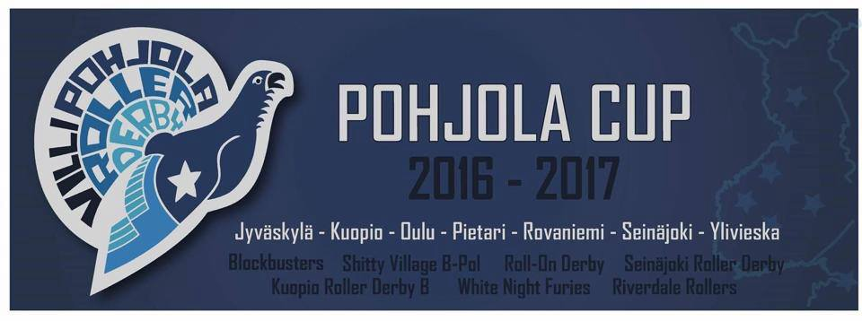
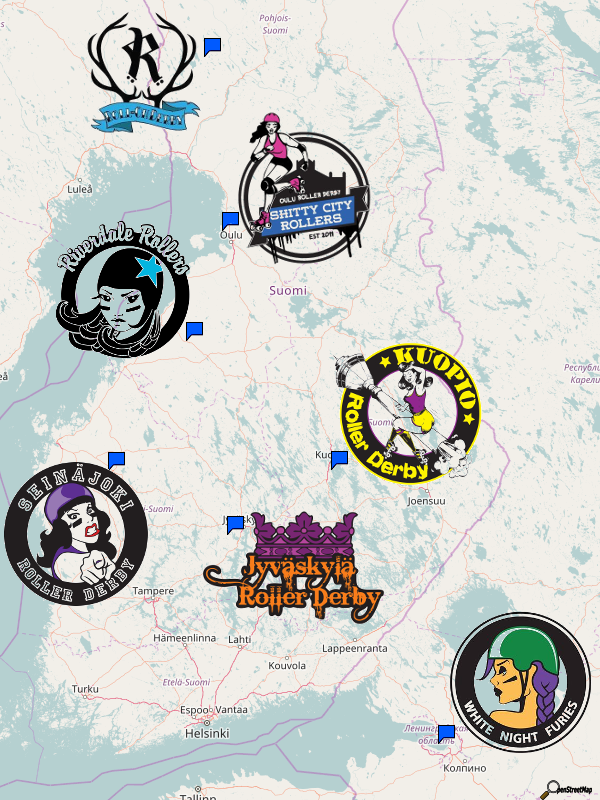

An interview with Lothian Derby Dolls' Captain: Fully Harmed
The third team we've covering in the run up to Auld Reekie Roller Girls' ARRGmageddon Tournament is Lothian Derby Dolls. LDD are, perhaps, the underdogs coming into the tournament in some ways, having lost to Dundee's Bonnie Colliders early this year. However, their roster at that point was somewhat different to their current lineup, so it's really hard to call. We talked to their Captain, Fully Harmed, to see how Lothian's year has been, and how they're thinking about the upcoming Tournament:
- So, I think it's fair to say that Lothian Derby Dolls have had a mixed year so far; early on you had a few losses against the Bonnie Colliders and Mean City, but more recently you pulled off a win against Ayrshire Roller Derby away... how would you say the league is steering itself?
I would say this year has been very mixed. We started off quite low; I think with LDD it's always very skater dependant, and we lost a few reliable, strong skaters. We've really spent the summer building up our core again. We've got a reliable lot of, I'd say, 15 skaters, but, because of the type of league we are... you know, it could be chicken pox and, because we're mums, that could be (say) 5 skaters off for a couple of weeks.
We've also had some injuries with some of our players, Poca Loca [LDD ViceCaptain] came back quite strong from an ankle injury, but she's still not 100%, and Fury has a niggling knee injury.
However, I would say it's been a really really positive year, because while we've really stepped back from bouting, we've really worked on our skill, to get that more solid; our skills, our communication, our teamwork. Definitely, on taking over as Captain, that's been our focus as a team: it's not about winning or losing in my eyes, (I mean, a win's brilliant) it's about us all having our personal goals, and as a team having a goal.
We are a little league; we're the smallest of the leagues who will be playing [in ARRGmageddon], by miles. I mean, we've got 30 active skaters just now. For us to be even putting ourselves forward for the tournament, we've come a long way, this year.
Ayrshire was a brilliant experience; lovely people, lovely skaters. We were really happy to win, but for us it was more about showing that working on our skills together as a team, and you know, it really proved to us that when you work on your skills and trust each other, it works.
So, thats the change from the [bout against the] Bonnie Colliders... when we played them, we weren't really working well as a team, I would say we got downheartened very quickly.
These days, as a Captain, I'm pushing - "Fine, if we're losing, we're working on Our Goals, all the time, keep strong, .. " So you know, I'm not expecting a win, in a week's time, but I'm expecting us to have our goals and win that way !
- Despite you saying that, LDD are the only team competing at ARRGmageddon who've actually had Tournament experience (from the Battle of Britain tournament in 2013). Quite a few of the skaters from 2013's roster are still around, has their experience helped in preparation?
I think it does help. The skaters who were involved in that experience, you know, they've been very honest - that there's negative [factors] to being involved in a tournament - but, we've talked about that, and we're going to try to avoid those issues with people's stamina, and try to keep the positivity going all the time.
I think, compared to [Battle of Britain], there's a lot more positivity, there's a lot more — happiness - I feel positive, regardless of the score, that LDD will come out, and we'll play strongly, we'll work together well, but, you know, we're against big teams.
But, I think that previous experience will help us - we've got a lot of players with [general] experience, though. We just keep everything calm, and…
- When the high of the tournament has passed, what's coming up next for LDD?
Well, other than the tournament, we're looking for return matches, with New Town and the Fight Hawks, we're looking at some more new bouts with new teams, which are about our levels.
The problem with [finding bouts in] Scotland, is you've got Glasgow, ARRG, Granite, Dundee, even the [Bairn City Rollers'] Central Belters are up there, and Fierce Valley,… and then there's us. [Our interest is] trying to play with more teams that are our level, so we can get better scrims, and bouting experience.
But, also, we're really working on our Coed. Fear and Lothian were our big piece of work we did this year, with Capital City, and I think training with men has brought a different dynamic to the team. Definitely, it's speeded up our game: we've got less time to stop and think about things on track. So, Fear and Lothian will be having a bout, we've got a couple of idea of teams, we're just negotiating that at the minute.
That's definitely a focus for LDD as well, keeping the Coed going - and really working on our female game, consolidating all the skills we've been working on.
So, we're feeling positive. And I think we're the kind of team that, you know, it doesn't matter if we win or lose, but … the thing about Ayrshire was, they're a great team, they think about this the same way as us: you go out and you do the best you can, and you enjoy it - I mean, that's why we all do it - you enjoy yourself, that's sometimes forgot. And, we are a team that really do; we socialise together, we love each other, we support each other, if we're injured, and we do have a lot of kids and they play together too. It sounds a bit mushy, but we're very much in and out of each others' lives.
And, it sounds terrible, but if somebody hurts one of my Dolls, I'll do everything I can to support them.
So, very much, we've got a lot of camaraderie between us, and I think we've come along way together, through all the ups and downs for LDD; I'm sure there's more to come.
We are a wee league I mean, ARRG's got about 60 skaters and you can't… compare them.But actually, I've skated with some of the girls from the C team, you know, at scrims and things, and they're a lovely bunch, so...
I think LDD's getting to know leagues a bit better, I mean, Dundee are very friendly with us, and Granite too… so it'll be an enjoyable day, we're really looking forward to it.
The ARRGmageddon Tournament is running on the 26 November, at Auld Reekie's usual venue of Meadowbank Stadium, as an all-day event starting at 11am.. Ticket prices are £8 online, £10 (£6 concessions) on the door, free entry for under 14's.
First time tournament announcing, or: How Chasing Katy survived MEC 2o16
Last weekend's Men's European Cup (2016) in Newcastle was a great success, not least because of the high quality stream, and the commentary provided. One of the MEC2016 announcers was Chasing Katy, co-host of the Talk Derby To Me podcast, and independent announcer; she's graciously written up her experience for the blog here. (Comments in [ ] are editorial)
To be honest, I hadn't initially applied to announce at this year's Men's European Cup. Not because I didn't want to do it, but because I hadn't thought I was ready for that big an event. But after some cajoling (thanks, Mags Payne!) and some reassurance (thanks [fellow Talk Derby To Me Podcast Hosts] sMACk and King), I submitted my application.
Part of the application was an announcer CV, something I'd never done before. It was interesting to go back throughout my time in roller derby and try and remember all the games I'd announced (the first being waaaaay back in September 2011 when the Fair City Rollers took on the Wakey Wheeled Cats). Doing that slightly reassured me that I'd been doing it long enough that I should know what I'm doing.
A couple of weeks later I got the news...I was on the crew and we were given access to the super-secret MEC 2016 Announcers' Facebook group, where I got to see who I would be announcing with. There were some familiar names and faces, but the great thing was I'd only announced with two people before (Archie [Bairn City Rollers' man of many names] and sMACk) so it was going to be a good way to meet other announcers and learn some new things.
I know that I'm portraying an image of me being cool, calm and collected about this whole process. That's intentional, because I can't spell the noise my brain was making the entire time. It was something between a whimper, a scream and a panic attack. It involves lots of vowels, that much I know.
Then, about a week before the tournament, we got the schedule for day 1 and I learned I would be doing feed announcing as well as in house. I'd never done feed prior to MEC, but made a point of listening to the WFTDA Champs announcers the weekend before. I was also down to do house announcing for Tyne and Fear (the hosts) against Panam Squad with Helliverance, who I'd known for years but never announced with. Then, for the final game of the day, I was back on feed.
As MEC got closer, my nerve-citement increased and on Friday, myself, sMACk, [Granite City's] Krusty and [Auld Reekie's Terrifying] Tink headed to Newcastle.
We had to be at the Walker Activity Dome for 7.30am on Saturday, so I was extremely bleary-eyed and in need of coffee when I met Sven and Malice, our THAs for the weekend. We were shown the workings of the feed, where everything was (loos, coffee, all the essentials) and given the chance to get sorted. I had prepped with some notes on the teams, so I read over the ones I needed for my first call, got a coffee and spoke to some other very tired people. Coffee, I soon realised, is the elixir of life for people involved in roller derby tournaments.
Thankfully, my first time on the feed (10am on Saturday for De Ronnys vs the Mad Riders) was with sMACk. Given the many hours we have spent talking on microphones to each other, that definitely made it a bit less scary (I tried to ignore the fact that, unlike the Talk Derby To Me podcasts, this was live and we were actually sitting in the same place) and I enjoyed it. Beforehand, a lot of seasoned announcers were telling me that they preferred feed to house and after doing that game, I can see why.
For me, the main difference was that I could say more. When you do in-house announcing, there's a risk that the teams will hear something that could give them an advantage in the game (for example, the cardinal rule, never announce a jammer getting released from the penalty box or approaching the back of the pack) but that risk is reduced on feed. I could happily chat about why a team was doing certain things tactically or how I feel they could make changes to improve.
Another thing I also found fun was interacting with people watching the feed. There were tweets and YouTube comments coming in throughout and it was cool to get tidbits of information about the teams or just a “good job, guys”. I did not agree with King Crazy and StatMan that sMACk and I needed subtitles, however. (Haggis, haggis, Irn Bru to you too!!)
The house game went well, but as it was the home team in action, the crowd got loud and I soon began to realise that I needed to take care of my voice. This wasn't like a single or double header, after which I could go home and rest. I had a whole other day to get through and I wanted to be able to speak by the end of it.
The rest of the day went well. I ate a Hippo burger and got to watch some fantastic roller derby, and speak to a whole bunch of people I hadn't met before or hadn't seen in ages. I even managed to squeeze in a bit of dancing! But it was about 10pm before we got back to the hotel and I was ready to just chill.
The next morning we didn't need to be at the venue until 8.30 – a long lie going by the previous day! First up, I got to do house announcing with the fantastic Archie, whose enthusiasm and showmanship really got me in the mood for another day of announcing, then I was back on feed later with Roller Polar Bear and finally I closed out my day house announcing the third place game between Lincolnshire Rollin' Thunder and South Wales Silures.
I've got to admit, by the end of my last call, I was ready to not speak again for a while and I really wanted to go home to my own bed. Six amazing games of roller derby, out of a total of 13 played over the weekend, that I got to blether on about. The Hall's Soothers and hot water with lemon have been flowing ever since (and I even managed to pick up a bit of lurgy at some point over the weekend).
But all in all, it was a fantastic experience, during which I learned a lot, met some great people, saw the best of European Men's Roller Derby and got the chance to grow as an announcer.
Hopefully, they will have me back next year!
A chat with... Bonnie Colliders Captains Khilleesi and G-Wrecks
So... Dundee's B Team, the Bonnie Colliders, have had a pretty exciting year to date, which is about to get only more exciting with their first appearance in tournament - Auld Reekie's ARRGmageddon on the weekend of the 26th November. We had a chat with Bonnie Colliders Co-Captains Khilleesi and G-Wrecks about the upcoming challenge - and also Dundee A's upcoming trip to Tenerife in December (as both skaters are also on the A roster).
You should be able to listen along here:
[soundcloud url="https://api.soundcloud.com/tracks/293033096" params="auto_play=false&hide_related=false&show_comments=true&show_user=true&show_reposts=false&visual=true" width="100%" height="450" iframe="true" /]
nonUS/Canada Derby Roundup: Nov 19,20 Edition
Coming to the end of the year, and the bouts keep on coming in Europe (and Latin America)! As always, bout information is drawn from Flat Track Stats, so if we're missing you, please get your information into FTS! (We can help with this, if you have issues.)
We also use SRD Rank (our own ranking scheme) to provide some result predictions (especially in places where FTS refuses to).
Scotland
Starting in Scotland, there's only one home bout we know about:- Up in Aberdeen, the city's "Open" league, Granite City Brawlers, are hosting their first home bout, against newly formed Crash Test Brummies B team, the Beta-Test Brummies. We've a preview for this here. [FTS link] (As the Beta Brummies are debut, this is impossible to predict.)
- Also, however, Scottish skater-owned-and-operated Skate and Derby store, 5th Blocker Skates, are having their 5th Birthday Bash in Glasgow, with a full day of various derby activities!
UK & NI
Over in the rest of the UK and Northern Ireland....- Belfast City Rockets are hosting Auld Reekie Roller Girls C, the ASTROs, in the latter's first international. We interviewed them about this here. [FTS link] (FTS calls this as a precisely 50:50 chance for each team to win!)
- Way down south in London, London Rockin Rollers are hosting a double header, with LRR B taking on the Norfolk Brawds [FTS link], and LRR A facing Limerick [FTS link]. (FTS favours LRR A and the Brawds respectively, as does SRD Rank)
- Birmingham's Central City Rollergirls are hosting their own A and B bout, with both teams taking on their opposite numbers in Paris Rollergirls.[FTS A, FTS B] (FTS and SRD Rank favour Paris A and Central City B, with the B bout expected close.)
- Moving slowly north, Southend's Seaside Sirens are facing Rebellion Roller Derby in a closed bout (so no event page). [FTS link] (FTS and SRD Rank disagree here on the likely winner)
- And, in a second closed bout, Eastbourne Roller Derby (Women) are taking on Surrey Roller Girls B [FTS link] (FTS thinks this is really close)
- And, in Nottingham, there's a mighty triple header, with Nottingham A facing Hallam Hellcats [FTS link], Nottingham B taking on Hull's Angels B [FTS link], and men's league the Super Smash Brollers facing Southern Discomfort B (Mild Discomfort) [FTS link] (FTS expects two close bouts for the women, with the edge for the hosts (SRD thinks they'll be slightly less close, but agrees on likely winners). FTS won't call the men's bout, SRD rank favours Mild Discomfort)
Europe
- In France, the multi-tiered French Championships continue to power on, with bouts on both the 19th and 20th between Lorient, Anjou, Brest, Thonon, Lyon, Mâcon, Pontarlier, Clemont-Ferrand,La Roche sur Yon, Le Mans and Caen (across two different "zones" hosted by Lyon and Brest) .[event page (zone 4, Lyon) event page (zone 8, Brest)] [FTS tournament link]
- Also in France, however, Roller Derby Toulouse are hosting their own triple header, with Toulouse A taking on exhibition team the Unnamed Bitches [FTS link], Toulouse Men's Quad Guards facing similarly exhibition Unnamed Basterds [FTS link], and Toulouse B facing Namur Roller Girls [FTS link] (FTS and SRD Rank won't call the Unnamed bouts, as they're Exhibition. The B v Namur bout looks close, with FTS calling it for Namur.)
- The German Bundesliga also continues, as Roller Derby Dresden host BearCity [FTS link] on Saturday, and (apparently - no event page, but on Derby Position) Bear City host Stuttgart on the Sunday (FTS won't call these, due to ranking system restrictions - SRD Rank thinks that Bear City are likely winners.)
- In Norway, there's an almost unheard of quadruple header, hosts Oslo facing Manchester's Rainy City B [FTS link] and Dublin B [FTS link] , Dublin and Rainy facing each other [FTS link], and, to round things off, Oslo B taking on Rainy C! [FTS link] (FTS thinks that Rainy B have the advantage in the triple, with Rainy C also looking likely to take their own bout. SRD Rank thinks that Oslo A will be stronger at home; but agrees on the B/C bout.)
- In Sweden, Gothenburg Roller Derby are hosting fellow Gothenburgers Dock City Rollers B (against their own B team)[FTS link] and Copenhagen Roller Derby (against their A team)[FTS link] (Gothenburg A are likely to win, but Dock City B look like taking the win here (SRD Rank considers the B bout to be on a knife-edge).)
- And, finally, in the Netherlands, Breda's Suck City Rock'n Roller Dolls are hosting Enschede's Roller Derby Twente.[FTS link] (FTS calls this for the visitors, and SRD Rank agrees.)
Latin America
- And, in Argentina, Buenos Aires Roller Derby are hosting a triple header on Sunday, with BARD A playing Wonderclan (also of Buenos Aires) [FTS link] in a double header with BARD B against 2x4 Roller Derby's Las Pibas [FTS link] and BARD C facing Cosmicclan (Wonderclan B) [FTS link] (FTS won't predict these bouts. SRD Rank can't call the third bout, due to lack of connectivity; but predicts BARD A and 2x4 B (Las Pibas) to win their respective bouts.)
Late Additions
- Also in Sweden, Örebro Roller Derby are hosting the first set of bouts in the Seriespel (Division 1) - with the hosts playing Uppsala, Stockholm B and Umeå over the weekend in four bouts. [FTS tournament page] (SRD Rank favours Stockholm B here - although Umeå also look strong.)
Granite City Brawlers Debut Home Game
It's November, the winter duvet has been brought out of hibernation and it is rather chilly up here in Aberdeen. You may be thinking that the time for fun things is gone and that you will have to wait till next year for more roller derby up in Aberdeen (or south, I don't know who is reading this or from where, I'm hedging my bets here). Well, you are wrong. Very wrong.
On Saturday 19th November, Granite City Brawlers will take on Birmingham’s Crash Test Brummies B team for what promises to be a memorable game of roller derby.

Why so special? Well...this is a very special game for a myriad of reasons, the biggest one being that it will be the FIRST EVER HOME GAME of GCB!
While you may recognise a few faces and names, the brawlers have never played a public home game as a team. The brawlers did take on Bairn City Rollers’ Skelpies last year in Grangemouth but that was different, this time it's home turf.
The Brawlers have been preparing for their home debut for quite some time and a lot of people have been waiting eagerly. Well now the time is here.
The important facts:
Who? Granite City Brawlers vs Crash Test Brummies B
What? Some first class roller derby. Considering the skaters taking part, I am expecting nippy footwork, hard hitting, near impenetrable walls and excellent sportsmanship.
Where? The Beach Leisure Centre, Sea Beach, Aberdeen, AB24 5NR
When? Saturday 19th November 2016
Doors open at 2.15pm
First Whistle at 2.45pm
Why? Because roller derby is excellent and both of the teams playing are fabulous and it promises to be a good game.
How? Entry is a bargain at £4.00 per human. Although under 12s get in free if accompanied by a paying adult.
I also have heard rumours of there being a raffle...not rumours, it's totally true.
So come and see some local roller derby history being made.

An interview with: ASTROs Captain, Princess Die

*So, you've been in ARRG since before the ASTROs ever existed, and now you're captaining them. Tell us a bit about how being Captain is going, since … March this year?
Die: So, we set up the team in March, and had our first game around June [against Granite City's Fight Hawks].
I was captain of the [ARRG B, the Cannon] Belles, and then the Reserves after that (when the Belles changed their name to the Reserves), and I've been Captain for a home seasons team as well, so I've been a Captain for quite a long time, and I'm really proud of that. When the ASTROs were set up, it was a sort of mixed team - it was a team of newer skaters, coupled with some returning skaters - I'd just taken a year off skating to have a baby, so I was returning - and we had some people who were just returning from injury and things. I suppose the two factors - my previous experience, and that I'd returned from a year off skates - meant that I could relate to all levels of experience in the team, and bring a lot as captain, so I was totally honoured to be nominated. To be fair, I was the only one who was nominated, so I didn't have a lot of choice, but I'm still very proud to lead our team! It's been really good: developing new skaters is something that I love doing; I coach the Fresh Meat classes, or Skate Skills as we call it now, I coach at all levels, but I mostly coach the beginner classes. I really enjoy developing new skaters, so it's been really fun.
*The ASTROs have had a pretty good innings so far, with victories over Granite City B, and Mean City Women, and a not bad loss against your strongest opponents so far, Dundee's Bonnie Colliders. You must be happy with the track record to date?
Die: Yes! We've done really well! We've developed some quite specific tactics, that we've really really worked hard on, and, when we played Mean City away a couple of weeks ago, and we really saw how good our tactics were, and how they worked, that was lovely to see. Everybody in the team is incredibly dedicated, working towards these tactics, and thankfully they're all really responsive to my ideas, (which sometimes are really bad!). But we go with it, and we work things out, and see what works and what doesn't and it's been really interesting and fun, but we've done very well. We've also had two closed bouts, which we won both of as well! So, yeah, we've had a really good run, so far.
 Princess Die, left, facing off against Mean City in the ASTROs' most recent victory. (Photo: Laura MacDonald)
Princess Die, left, facing off against Mean City in the ASTROs' most recent victory. (Photo: Laura MacDonald)
*Of course, your next bout is on the 19th, against Belfast City Rockets, your first "proper" away game, flying across the Irish Sea. How do you feel about the extra challenge of your first international - Flat Track Stats today predicts a 50:50 perfect split as to the winner!
Die:Oh, really? [laughs] Okay, that's exciting!
Erm; we're incredibly excited. There are just four people on the team who've travelled for away games before, for the kind of away games where you're leaving the country, so it's relatively new for pretty much everyone on the team. So, everyone's really excited that we're going away, first of all. A lot of people who are on the ASTROs have been members of ARRG and skating for a while, but haven't been on a travel team, so they've been through seeing other teams go on their trips and things, So everyone's very excited about this.
In terms of the game, we are really really working to nail down our tactics, and we do really think that our strengths lie in our tactical knowledge and our tactical awareness, and how together we are as a team. We have a lot of trust, we do a lot of trust-building skills and exercises and things, and we've really developed this intense trust with each other which I think really works on track. So we're hoping we can bring that with us.
*Yes, one comment that's often been made of the ASTROs when seeing you for the first time, is that you're very "together" for a C, or even a B team. Sometimes B teams tend to be more 'relaxed', but you're all doing very cohesive activity as soon as you arrive at a venue.
Die: Yeah, we do, yeah. I think its just an "ARRG" way of being I think: we practise "zenfully", so we keep ourselves calm and into each other. We don't watch the track, or we try not to, when we're on the bench; we don't watch the play that's happening, we try to focus on what we're gonna do, rather than what's happening right now. We focus on each other, rather than the other team, and you know, that's the kind of way that ARRG works, right from All-Stars all the way down. Certainly, in terms of my experience, having played on the B team for a couple of years before I had taken time off and our Bench Coach [Lex Louthor] also a Reserves skater - we were on the Belles and the Reserves together at the B-team level - we've kind of brought that experience down to the C team. Straight from Day 1, we've been like, "we're playing this as seriously as any other travel team". And I think that takes some people that we play by surprise, because, like you say, they tend to be a bit more relaxed at B team level, and so when coming to a C team, they think it's going to be really quite relaxed, and quite easy, and then we just put up a fight, and they're like, "Allright, okay!"
*So, we hear that, even after Belfast, there's more excitement in the ASTROs' future?
Die: Yeah, we've got a tournament! We're hosting a Scottish tournament on the 26th of November; we've invited .. we've got 2 B teams, and an A team, and the ASTROs playing in the tournament. There's Lothian Derby Dolls, A team, Granite City B team, and Dundee's B team. The four teams are going to play off against each other in short games, in the morning, and then in the afternoon there'll be two full games - one for our 3rd and 4th place playoff , and one for 1st and 2nd place. So, we're very excited about that. Obviously, we've played Dundee B team this year, and Granite City B team this year, and we won against Granite City, but we lost against Dundee. So, I don't want to call this a grudge match, but we're all really wanting to beat Dundee this time… A number of us played in the WarriARRGs, which is our ARRG pick-up team, a mixed-ability pickup team, with advanced and less advanced skaters together, and we played also Dundee's B team as the WarriARRGs this year,… and we lost. So we really want to beat Dundee in the tournament! That's our biggest goal at the moment!
If you can make it to Belfast on the 19th, the bout will be held at Queen's Sport, with doors opening at 1pm. Tickets £5 on the door, under 12s free. We'll have details of the tournament on the 26th, as well as more content, closer to the time!
November 12,13th - NonUS Derby Roundup
And we're back for another weekly roundup of everything happening outside the continental USA, as determined by Flat Track Stats entries.
In the aftermath of the big WFTDA tournament, this week we still have the many equally important national tournaments going on, as well as another international tournament of experience now.
In all cases, we also try to predict the winners, using both Flat Track Stats' Elo ratings, and our own SRD Rank rating system.
Scotland
- The only event in Scotland is Glasgow Roller Derby's Home Teams Final, where the Bad Omens take on the T Wrecks. (This is not tracked by Flat Track Stats.)
- Certainly the biggest thing in the UK this weekend is the 2016 iteration of the Men's European Cup, hosted, as always, by Newcastle Upon Tyne's Tyne and Fear Roller Derby. This year, the competitors are: Gothenburg Salty Seamen (Sweden), Manekken Beasts (Belgium), the hosts Tyne and Fear (England), South Wales Silures (Wales), Panam Squad (France), Southern Discomfort (England), Tampere Rollin' Bros (Finland), De Ronnys (Germany), Mad Riders (Spain) and Lincolnshire Rolling Thunder (England). (FTS tournament page) [As the only MRDA Champs attendees in the group, Southern Discomfort are rated the highest by SRD Rank and FTS. The rest of the field is a bit closer, with the Silures, Tyne & Fear and Rolling Thunder all pretty close at the top.]
- Wiltshire Roller Derby are hosting Hereford Roller Derby [FTS link], in a double header topped by a Men's mixed exhibition bout. [SRD Rank favours the hosts here, whilst FTS disagrees and favours the visitors]
- Brighton Rockers Roller Derby are hosting an international, as Eindhoven, Netherlands' RockCity Rollers come over to play [FTS link] (this is a double header with a rookies bout featuring the new Brighton Rockerbillies v a mix of Basingstoke and Southampton) [FTS and SRD Rank similarly disagree here, with our ranking favouring, narrowly, the visitors]
- Swansea City Roller Derby are also hosting a double header, as Swansea A take on Royal Windsor Roller Derby [FTS link], and Swansea B challenge Riot City Ravens (of Newport).[FTS link] [SRD Rank and FTS agree that Riot City are likely to win in the B bout, but slightly on the A bout, both favouring the hosts, but SRD considering it a close thing]
- Plus, Liverpool Roller Birds are hosting a "mini-tournament" of 40-minute games, against Spa Town Roller Girls, North Wales Roller Derby B and Sheffield Steel's Crucibelles [Not on FTS, due to the unusual format]
- Over in mainland Europe, the French Championships are continuing to roll on. [FTS tournament link] as Roller Derby Tarbes hosts a two-day event also featuring Pibrac, Toulouse, Castres, La Rochelle and Bordeaux' SAM. [We think Toulouse is notably strong here.]
- And in Germany, the Bundesliga also continues, as Berlin's Bear City take on Ruhrpott [FTS tournament link] in a whole day event with attached bootcamp. [We're happy to call this for Bear City, assuming their composition is similar enough to "Berlin Bombshells"]
- And in Finland, the southern-Finnish Suomi Cup is ongoing, with hosts Kouvola taking on Oulu, and Tampere facing Turku's Dirty River [FTS tournament link] [We narrowly favour Dirty River and Kouvola, but it looks close. FTS essentially calls a tie for Tampere/Turku, and disagrees on the direction of the close bout with the hosts.]
- Amsterdam Roller Derby are hosting a double header on Sunday, as they host Namur Roller Girls , with A v A[FTS link], and B v B [FTS link] bouts. [SRD Rank gives the win to the hosts A and B (with the latter predicted to be v close). FTS differs on the latter bout, calling it for the visitors.]
- Leipzig Roller Derby are also hosting a double header, first taking on Munich B (the Municorns) [FTS link], and then hosting an exhibition bout against Vagine Regime filling out the schedule. [FTS cannot predict this bout, and neither can SRD Rank as Leipzig are not part of the connected group.]
- Malmö's Crime City Rollers are going one better, and hosting a triple header, as the hosts' B team take on Roller Derby Madrid [FTS link], the C team take on Aarhus [FTS link], and visitors Gothenburg also take on Madrid while they're there [FTS link] [We give the likely win to the hosts over Madrid, but think that Aarhus have a good chance of winning against the C team. FTS agrees with these, but we differ over the winner of Gothenburg and Madrid.]
- in some single bouts, Vienna Roller Derby are hosting Luleå Roller Derby [FTS link] [This is a point of disagreement for SRD Rank and FTS, with SRD favouring the visitors]
- and in Switzerland, Zurich Roller Derby are hosting Stuttgart Valley B [FTS link] [FTS and SRD Rank concur that Zurich are very strong here.]
- Over in Latin America, we have a single fixture on record, as Buenos Aires' Dirty Fucking Dolls host Buenos Aires Roller Derby C (the Cougar Rollers) [FTS link], and their B (or C?) team (the Rotten Vicious Dolls) take on Fawkes Roller Derby [FTS link] , and the event is closed with a coed/open exhibition bout. There's little historical data on Fawkes Roller Derby , or the Cougar Rollers in FTS at the moment (we're working on fixing this), so we can't predict these bouts at this time.
The "Dust Devil Cup": An amusement with historical records.
Whilst the current WFTDA Championships structure provides the opportunity to win the Hydra once a year, commentators have pointed out to us that there's other sports where Championships pass rather more easily.
In particular, Boxing allows Championship Belts to be won by anyone successfully defeating the holder, at any point in time.
So, we thought it might be interesting to see what would have happened to a "Dust Devil Cup" under the same rules; imagine Texas Rollergirls, winners of the first ever modern Roller Derby tournament, the Dust Devil Cup in 2006, passing it on to whoever next defeated them, and on and on up to the present day?
Well, you get a rich and varied look through the history of Roller Derby, like this:
Inaugural Champions Texas Rollergirls 24/2/2006 - 9/12/06 Tucson Roller Derby 9/12/06 - 18/2/07 Rat City Roller Girls 18/2/07 - 28/4/07 Windy City Rollers 28/4/07 - 19/8/07 Gotham Girls Roller Derby 19/8/07 - 29/9/07 Kansas City Roller Warriors 29/9/07 - 2/12/07 Carolina Rollergirls 2/12/07 - 19/7/08 Cincinnati Rollergirls 19/7/08 - 13/9/08 Detroit Derby Girls 13/9/08 - 11/10/08 Philly Roller Derby 11/10/08 - 11/10/08 Gotham Girls Roller Derby 11/10/08 - 14/11/09 Oly Rollers 14/11/09 - 3/10/10 Rocky Mountain Rollergirls 3/10/10 - 4/6/11 Oly Rollers 4/6/11 - 13/11/11 Gotham Girls Roller Derby 13/11/11 - ...
Here we have a decision to make. If we decide that the "Dust Devil Cup" is only eligible for WFTDA member leagues, then the chain ends with Gotham's first loss at a WFTDA Championships in many years, in 2015:
Gotham Girls Roller Derby 13/11/11 - 8/11/15 Rose City Rollers 8/11/15 - 30/4/16 Victorian Roller Derby League 30/4/16 - 5/11/16 Rose City Rollers 5/11/16 - Current Champions
If we embrace all of Roller Derby, however, we remember that Gotham had lost one time before then, in a battle of the Champions held in 2013. In this case, the chain goes:
Gotham Girls Roller Derby 13/11/11 - 6/6/13 Your Mom Men's Roller Derby 6/6/13 - 18/10/15 St Louis Gatekeepers 18/10/15 - 14/5/16 Team USA Men's Roller Derby 14/5/16 - Current Champions
but perhaps having the USA National Men's team in charge of the Cup is a little too controversial, even for a light amusement like this...
In both cases, however, there's an other interesting point to be made by this: even allowing any loss at all to count, Gotham's dominance over Roller Derby was genuinely astonishing, compared to the period before (where the Cup would have changed hands at least twice a year), and the new period after (where it has already changed hands twice in the past year). It's also a new period in that teams are actually losing outside of Champs - something which used to be not-unexpected occurrence, but now something which is again no longer quite as surprising.
Scotland's newest Coed league, Inverclyde Roller Derby

The Pohjola Cup: Finland (and Russia) Compete!
We love the way in which Roller Derby has distributed itself worldwide, and part of this is the formation of many "regional" tournaments which are unfortunately easy for others to miss.
One of these is the Pohjola Cup, the annual tournament between the various leagues of Northern Finland. This is the third season of the cup, and it has grown each year, from a five team series in 2014 to a seven team invitational extending outside of the confines of Finland itself.

This season (October 2016 to May 2017) the teams competing are: Jyväskylä's "Blockbusters" Kuopio's "Kuopio Roller Derby B" Oulu's "Shitty Village B-Pol" [Winners in 2014] Rovaniemi's "Roll-On Derby" Seinäjoki's "Seinäjoki Roller Derby" [Winners in 2015] Ylivieska's Riverdale Rollers and, the first non-Finnish entrants to the Cup, St. Petersburg (Russia)'s "White Night Furies"
For those who've not looked at a map of Finland, these teams cover a pretty impressive geographical area, as you can see from the tournament map:

This cup is one great example of how more local roller derby groups can be essential to improve game opportunities and other collective activities. The Villi Pohjola Roller Derby group, who organise the Cup, are a collective of northern Finnish leagues (not just those competing in the cup itself), and also organise scrimmages and other activities together.
As with previous iterations, the 2016/7 Pohjola Cup is a round-robin, played over several months - one or two double-header fixtures a month, for a total of 21 bouts. Points are assigned as 2 for a win, 0 for a loss, with defaults counted as a loss for the absent team. There's then a single-elimination "finals" which takes the top 4 teams to determine the absolute winner for the year. The winner wins the Pohjola "Pölkky" (log), which is gloriously decorated for the occasion.
 The Pohjola Cup "Pölkky", which is retained by the champions each year.
The Pohjola Cup "Pölkky", which is retained by the champions each year.
This may be the final year when this is possible, however; the rapid growth of required games in round-robin tournaments with size might cause a change in formats next year, if the Cup continues to grow in membership, especially outside of Finland itself.
The first games of this Cup have already been played, with last year's Champions Seinäjoki taking a convincing 190:121 win against Riverdale, and the Blockbusters a closer 197:146 victory over Shitty Village.
We hope to bring you more structured updates on the Pohjola Cup as it progresses over the next few months!
[Thanks to Villi Pohjola's Heli Hiltunen for the details and photo of the Pölkky. Map of Finland based on OpenStreetMap data which is Creative Commons: Attribution-Share-Alike.  This work is licensed under a Creative Commons Attribution-ShareAlike 4.0 International License .]
This work is licensed under a Creative Commons Attribution-ShareAlike 4.0 International License .]